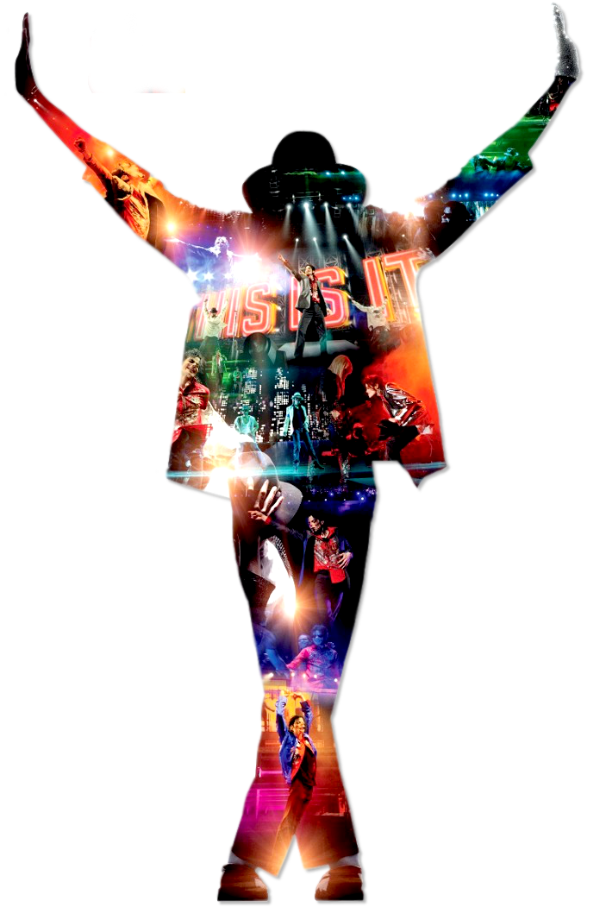
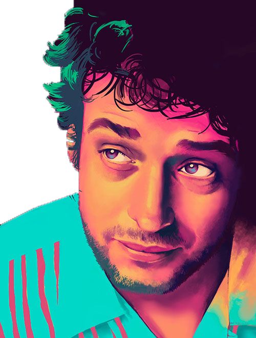
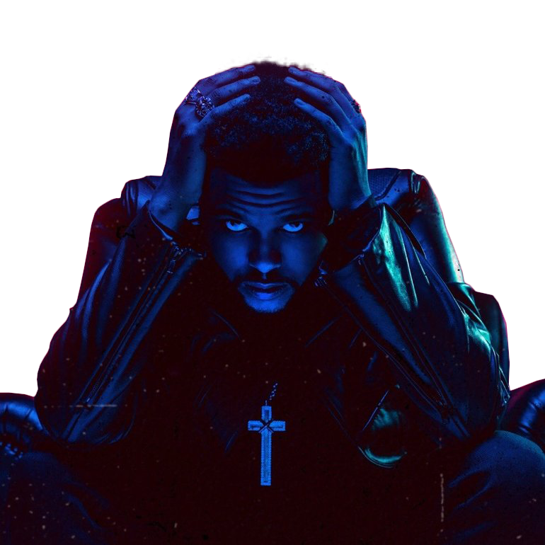
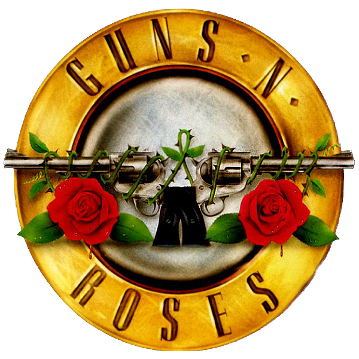
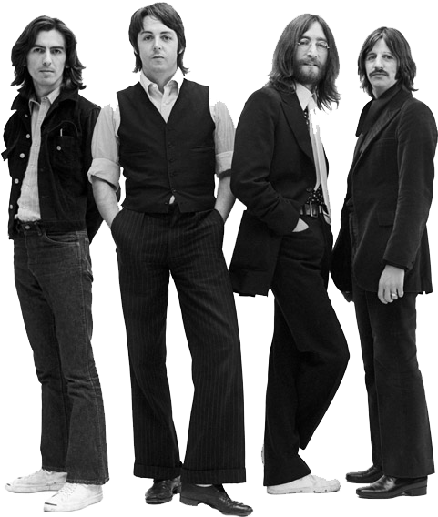
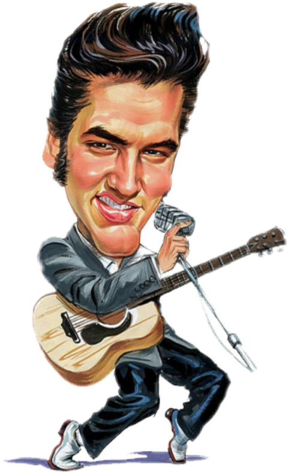
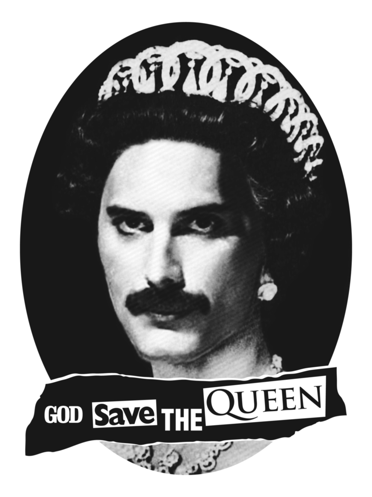

Fue una de las figuras más influyentes en la música y el entretenimiento del siglo XX. Nacido en 1958, comenzó su carrera a temprana edad con The Jackson 5 y alcanzó un éxito monumental como solista con álbumes como "Thriller," el más vendido de todos los tiempos. Reconocido por su talento excepcional en el canto, el baile y su innovación en los videos musicales, Jackson dejó un legado perdurable a pesar de las controversias personales que marcaron su vida. Falleció en 2009, pero su influencia sigue viva en la cultura popular y la música.

Nacido en 1959, fue un influyente músico y líder de la banda de rock argentina Soda Stereo. Con Soda Stereo, alcanzó gran éxito en América Latina en los años 80 y 90, con hits como "De Música Ligera" y "Persiana Americana". Tras la disolución de la banda en 1997, Cerati tuvo una exitosa carrera solista con álbumes aclamados como "Bocanada". Su música innovadora y su talento dejaron una marca indeleble en el rock en español. Cerati falleció en 2014, tras permanecer en coma varios años debido a un accidente cerebrovascular. Su legado sigue vivo en la música latinoamericana.

Cuyo nombre real es Abel Tesfaye, es un cantante, compositor y productor canadiense nacido en 1990. Saltó a la fama en 2010 con sus mixtapes subidos a YouTube, que destacaban por su estilo oscuro y su voz única. Su primer álbum de estudio, "Kiss Land" (2013), y el éxito de su segundo álbum, "Beauty Behind the Madness" (2015), con sencillos como "Can't Feel My Face" y "The Hills," lo consolidaron como una estrella internacional. The Weeknd es conocido por su fusión de R&B, pop y electrónica, y ha ganado numerosos premios, incluidos varios Grammy. Su álbum "After Hours" (2020), con el exitoso sencillo "Blinding Lights," ha sido ampliamente aclamado.

Es una icónica banda de rock estadounidense formada en 1985 en Los Ángeles. Su álbum debut, "Appetite for Destruction" (1987), se convirtió en un éxito mundial con sencillos como "Sweet Child o' Mine," "Welcome to the Jungle," y "Paradise City." Con su sonido crudo y enérgico, y la distintiva voz de Axl Rose junto a los riffs de guitarra de Slash, la banda se convirtió en un referente del hard rock. Aunque han experimentado numerosos cambios en su formación, Guns N' Roses sigue siendo una de las bandas de rock más influyentes y exitosas de todos los tiempos, con millones de discos vendidos y una sólida base de fanáticos.

Una de las bandas más influyentes en la historia de la música, se formaron en Liverpool, Reino Unido, en 1960. Compuesta por John Lennon, Paul McCartney, George Harrison y Ringo Starr, la banda alcanzó la fama mundial en la década de 1960 con su innovador sonido y letras ingeniosas. Su música abarcaba desde el rock and roll hasta el pop psicodélico, y su habilidad para experimentar con diferentes estilos los convirtió en pioneros en la industria musical. Con álbumes como "Sgt. Pepper's Lonely Hearts Club Band" y canciones como "Hey Jude" y "Let It Be," los Beatles dejaron un legado imborrable que sigue inspirando a músicos y fanáticos en todo el mundo. Aunque se separaron en 1970, su música sigue siendo atemporal y sigue siendo adorada por generaciones.

Conocido como "El Rey del Rock and Roll", nació en Tupelo, Mississippi, en 1935. Su estilo único, que fusionaba el rhythm and blues, el country y el gospel, lo llevó a la fama en la década de 1950. Conocido por su carisma en el escenario y su distintiva voz, Elvis se convirtió en un ícono cultural y musical. Con éxitos como "Hound Dog", "Jailhouse Rock" y "Love Me Tender", dominó las listas de éxitos y el cine en los años 50 y 60. Aunque su carrera se vio interrumpida por su servicio militar y problemas personales, regresó triunfalmente con su especial de televisión en 1968 y una exitosa serie de conciertos en Las Vegas. Su legado perdura como uno de los artistas más influyentes de todos los tiempos, y su impacto en la música popular sigue siendo evidente hasta el día de hoy. Elvis falleció en 1977, pero su música y su imagen continúan siendo celebradas por millones de fanáticos en todo el mundo.

Banda de rock británica formada en Sheffield en 2002. Compuesta por Alex Turner, Jamie Cook, Nick O'Malley y Matt Helders, la banda ganó reconocimiento con su álbum debut, "Whatever People Say I Am, That's What I'm Not" (2006), que se convirtió en el álbum de debut más vendido en la historia del Reino Unido. Con su energía punk y letras inteligentes, Arctic Monkeys rápidamente se convirtió en una de las bandas más populares del Reino Unido y ganó numerosos premios, incluidos varios Brit Awards. Su evolución musical a lo largo de los años ha sido notable, explorando diferentes estilos y experimentando con nuevos sonidos en álbumes como "AM" (2013) y "Tranquility Base Hotel & Casino" (2018). Con su estilo distintivo y su capacidad para reinventarse, Arctic Monkeys continúa siendo una de las bandas de rock más influyentes del siglo XXI.
Nacido como Farrokh Bulsara en Zanzíbar en 1946, fue un cantante, compositor y pianista británico, conocido principalmente como el líder y vocalista de la legendaria banda de rock Queen. Su incomparable rango vocal, carisma en el escenario y talento como compositor lo convirtieron en una figura icónica de la música. Éxitos como "Bohemian Rhapsody", catapultaron a Queen a la fama mundial y aseguraron el legado de Mercury como uno de los mejores vocalistas de todos los tiempos. Además de su trabajo con Queen, Mercury también exploró diferentes géneros musicales en proyectos en solitario. Su trágica muerte en 1991 debido a complicaciones relacionadas con el VIH/sida conmocionó al mundo, pero su música y su espíritu continúan inspirando a millones de personas en todo el mundo, consolidando a Freddie Mercury como una leyenda indiscutible de la música.

Queen es una icónica banda de rock británica formada en 1970, conocida por sus éxitos atemporales como "Bohemian Rhapsody" y "We Will Rock You". Con Freddie Mercury como vocalista, Brian May en la guitarra, Roger Taylor en la batería y John Deacon en el bajo, crearon un sonido único que fusionaba diversos géneros musicales. A lo largo de los años, Queen ha vendido millones de discos y sigue siendo una de las bandas más influyentes en la historia de la música. Su legado perdura a través de su música, películas y actuaciones en vivo.

Legendaria banda de rock australiana formada en 1973 en Sídney. Con su poderoso sonido de hard rock impulsado por guitarras eléctricas y la distintiva voz de su vocalista, AC/DC se convirtió en una de las bandas más influyentes y exitosas de todos los tiempos. Con álbumes icónicos como "Highway to Hell" y "Back in Black", la banda ha vendido cientos de millones de discos en todo el mundo. Canciones como "Highway to Hell", "Back in Black" y "Thunderstruck" son himnos del rock que han resistido la prueba del tiempo. A lo largo de las décadas, AC/DC ha mantenido su estatus como una fuerza dominante en la música rock, ganando numerosos premios y acumulando una base de fanáticos devotos en todo el mundo. Su energía en el escenario y su música atemporal continúan inspirando a generaciones de fanáticos del rock.